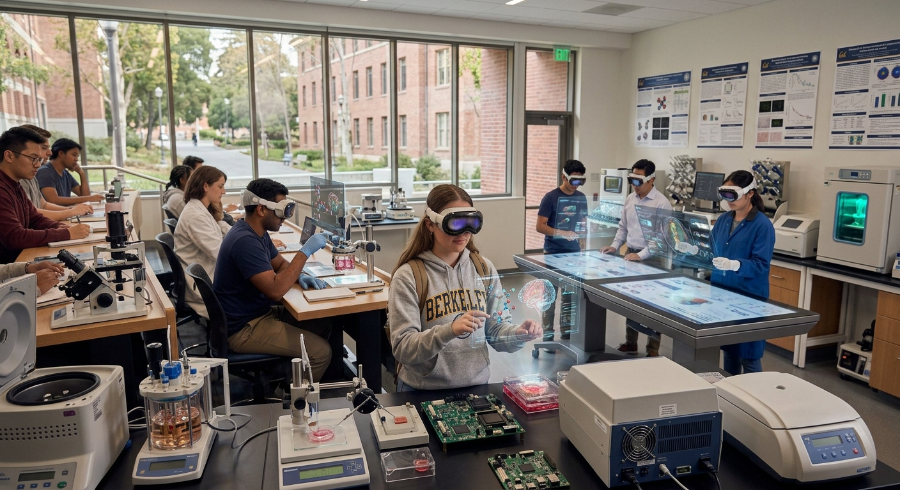

◎
Volumetric vector rendering
Watch Maxwell's equations, fluid dynamics and stress tensors evolve in real time, directly in room space, at the scale you choose.
For university STEM & engineering departments
Spatial Canvas turns abstract, multi-variable concepts into real-time interactive 3D models that fill the room, so students understand faster and your lab budget goes further.
Built for Apple Vision Pro · Works with MATLAB, Python & CAD

Everything students need to explore a system, not just read about it.
Watch Maxwell's equations, fluid dynamics and stress tensors evolve in real time, directly in room space, at the scale you choose.
Look at a variable, pinch, and drag. Gaze tracking and hand gestures tune parameters live, with the model responding instantly.
Shared spatial anchors put instructors and students around the identical model. Point, annotate, and demonstrate together.
Direct pipelines for MATLAB and Python (NumPy / SciPy). Bring your own solvers and course code into 3D.
Load existing geometry, simulate it, and send results back to your engineering toolchain.
Enterprise licensing built for departments: one agreement, every course, every lab section.
Three scenarios where a digital twin beats a physical bench.
A sophomore E&M class sees the E and B fields of a dipole antenna radiate around them. Drag the frequency with a pinch and watch the field lines re-form.
Replaces: static textbook diagrams and 2D plots.
Teams drop an airfoil into a virtual flow, sweep the angle of attack with gaze and gestures, and see streamlines and vortices in full 3D.
Replaces: scheduled wind-tunnel time and consumables.
Import a bracket from CAD, apply loads, and walk around the stress tensor field. Pass the model to a lab partner to compare designs side by side.
Replaces: destructive test rigs and sample stock.
Lead a 100-student lecture hall in shared sessions, then hand control to a student to test a hypothesis in front of the class.
Stream a SciPy simulation straight into the canvas. Tune a parameter by hand, and see the effect without re-running a plot script.
Software-defined equipment means no booking calendars, no breakage, and no safety paperwork, available any hour of the semester.
Physical wave tanks, wind tunnels and test benches are expensive to buy, house, maintain and schedule. Spatial Canvas replaces them with software-defined digital twins sold as a seat license.
Illustrative: at the Department plan, license cost is about $0/yr ($0 per student), versus $0 of equipment.
Estimates for illustration only; excludes headset hardware.
Early-access pricing. Lock in a founding rate for the first academic year.
$2,500/ year
One course or lab section
$12,000/ year
An entire department
Custom
Multi-department / university-wide
Prices are preliminary and subject to change. Apple Vision Pro hardware is sold separately.
Spatial Canvas runs on Apple Vision Pro. Co-located sessions let several headsets share one model in the same room.
Yes. MATLAB and Python (NumPy / SciPy) pipelines let you stream your own solvers in, and CAD formats can be imported and exported.
It's designed to replace the expensive, scarce, or hard-to-visualize setups, such as wind tunnels, wave tanks and test benches, and to complement hands-on work elsewhere.
We're enrolling early-access departments now. Sign up below and we'll be in touch.
Request a demo or reserve a founding rate. No payment required.